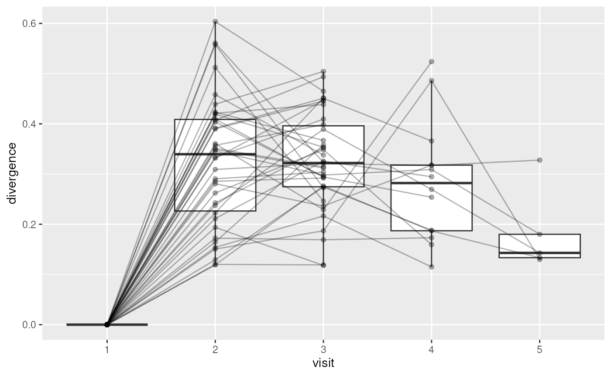
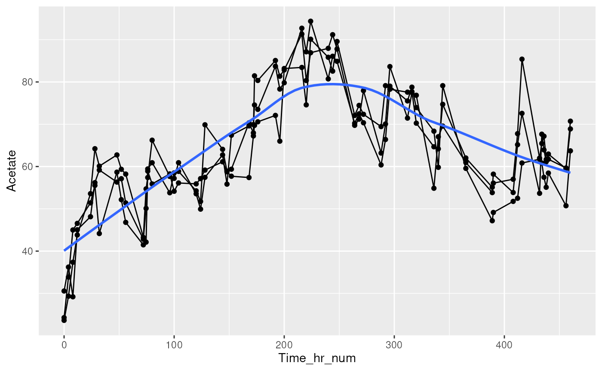
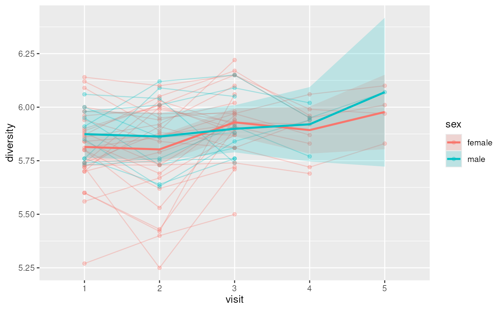

plotTrend() plots the trajectory of a feature, colData column or
ordination component over time for each subject, with optional group
summaries, boxplot paired layouts, and baseline subtraction.
a SummarizedExperiment
object.
additional arguments passed to the main layer
(geom_line for layout = "line"
or geom_boxplot for
layout = "box").
Character scalar. Specifies the feature, column or
ordination component to plot: a column of colData(x), a row of
assay(x, assay.type), or "<dimred>:<component>".
Character scalar. Specifies the column from
colData(x) that contains sampling times: numeric, Date or
a factor of visits.
Character scalar. Specifies the column from
colData(x) that identifies subjects. (Default: NULL)
Character scalar or numeric scalar.
Specifies the assay to retrieve y from when y is a
feature name. (Default: NULL)
Character scalar. Specifies the plot layout:
"line" draws one line per subject; "box" draws boxes of
y per time point. (Default: "line")
Logical scalar. When TRUE, draws
subject lines and points. When FALSE, hides subject lines and
points, leaving only boxes or the smooth curve. (Default: TRUE)
Character scalar. Specifies a group summary on top:
"none", "mean" (mean at each time point), or
"loess" (loess curve). (Default: "none")
Logical scalar. When TRUE, subtracts each
subject's first value from their trajectory. (Default: FALSE)
Character scalar. Specifies the column from
colData(x) to colour subjects and smooth curves.
(Default: NULL)
Character scalar. Specifies the column from
colData(x) to facet by. (Default: NULL)
Numeric scalar. Breaks a trajectory where consecutive
samples of a subject are further apart than this, in time.col
units. NULL never breaks trajectories. (Default: NULL)
A ggplot object.
Numeric and Date times are drawn on a continuous axis. Visits are
drawn in level order, including levels without samples.
data("minimalgut", package = "miaTime")
plotTrend(minimalgut, y = "Acetate", time.col = "Time_hr_num",
group = "StudyIdentifier")

plotTrend(minimalgut, y = "Acetate", time.col = "Time_hr_num",
group = "StudyIdentifier", smooth = "loess")

plotTrend(minimalgut, y = "Acetate", time.col = "Time_hr_num",
group = "StudyIdentifier", layout = "box")
